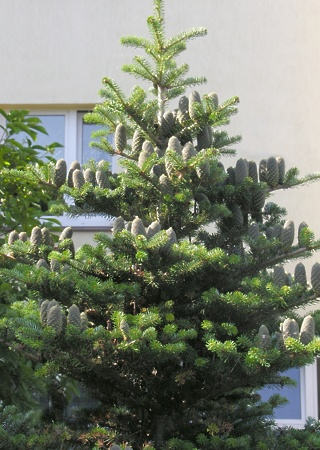

abies
|  | Abies Alba | |
|---|---|---|
| DSC: | iglasto drevo, ozke stožčaste rasti; v: 25m, š: 7m | |
| HAB: | pol senca (mlajša drevesa), sonce (starejša drevesa) | |
| GRD: | globoka humozna, dobro odcedna, blago kisla tla | |
| INT: | gospodarska jelka | |
| SLO: | navadna jelka | |
| Abies concolor | ||
|---|---|---|
| DSC: | iglasto drevo, rahlo stožčaste rasti (veje izraščajo vodoravno); v: 25m, š: 7m | |
| HAB: | pol senca (mlajša drevesa), sonce (starejša drevesa) | |
| GRD: | globoka humozna, dobro odcedna, blago kisla tla | |
| INT: | dobro prenaša vročino | |
| SLO: | koloradska jelka | |
| Abies koreana | ||
|---|---|---|
| DSC: | iglasto drevo, rahlo stožčaste rasti (veje izraščajo vodoravno); v: 10m, š: 4m | |
| HAB: | pol senca (mlajša drevesa), sonce (starejša drevesa) | |
| GRD: | globoka humozna, dobro odcedna, blago kisla tla | |
| INT: | dekorativni storži | |
| SLO: | korejska jelka | |
| Abies nordmanniana | ||
|---|---|---|
| DSC: | iglasto drevo, temno zelene iglice spodaj z belima listnima žilama, v: 25m, š: 6m | |
| HAB: | pol senca (mlajša drevesa), sonce (starejša drevesa) | |
| GRD: | globoka humozna, dobro odcedna, blago kisla tla | |
| INT: | prezimno trdna, košata rast | |
| SLO: | kavkaška jelka | |